第 1 题
设包含4 个数据元素的集合S，各元素的查找概率依次为{0.35, 0.15, 0.15, 0.35}。将S 保存在一个长度为4 的顺序表中，保存的顺序可调整，采用顺序查找，查找成功的平均查找长度最小为（ ）
A． 2.1 B． 2.2 C． 2.3 D． 2.9 答案与解析 答案：A
采用顺序存储结构，数据元素按其查找概率降序排列可得到最小的查找成功查找长度。查找成功时的平均查找长度=0.35x1+0.35x2+0.15x3 +0.15x4=2.1
教材第 39 页 第 2 题
下列关于折半查找，说法错误的有（ ）
A． 折半查找的判定树一定是一颗平衡二叉树 B． 折半查找的判定树中，所有叶子结点（非失败结点）不一定在同一层。 C． 折半查找的成功和失败平均查找长度都小于树高 D． 小数据量的情况下，可能线性查找性能更高。 答案与解析 答案：C
当折半查找判定树是一棵满二叉树，那么失败平均查找长度等于树高，C错误。在线性查找中，每轮只需要1次判断操作；而在二分查找中，需要1次加法、1次除法、1 ~ 3次判断操作、1次加法（减法），共4 ~ 6个单元操作；因此，当数据量n 较小时，线性查找反而比二分查找更快。
教材第 39 页 第 3 题
下列说法错误的是（ ）
A． 进行折半查找的表必须是顺序存储的有序表。 B． 折半查找所对应的判定树是一棵平衡二叉树 C． 对二叉排序树进行中序遍历得到的结点的值的序列是一个有序序列。 D． 在由n 个元素组成的有序表上进行折半查找时，对任一个元素进行查找的长度都不会大于log2(n) 答案与解析 答案：D
在由n 个元素组成的有序表上进行折半查找时，对任一个元素进行查找的长度都不会大于𝑙𝑜𝑔2𝑛+ 1。
教材第 39 页 第 4 题
下列选项中不能构成折半查找中关键字比较序列的是（ ）。
A． 500，200，450，180 B． 500，450，200，180 C． 180，500，200，450 D． 180，200，500，450 答案与解析 答案：A
450 比200 大，说明后续查找走的是200 的右边区间，该区间内的所有数都大于200，因此后续所有查找的关键字都应该比200 大，但是A 选项后续出现180<200，不符合折半查找的规则，因此答案选A。
教材第 39 页 第 5 题
含有10 个关键字的有序序列，关于其二分查找判定树（不含外部结点）的说法错误的是（ ） I．每个分支结点的左右子树的结点总数之差始终不变（1 或-1） II．度为1 的结点个数为3III．是一棵完全二叉树IV．是一棵二叉排序树
A． I、II、IV B． I、III C． II、IV D． I、II、III、IV 答案与解析 答案：B
此二分查找判定树两种情况如下图所示：每个分支结点要么左右子树结点总数相等，每个分支结点要么左右子树结点总数相等，要么左子树比右子树结点总数少一个要么左子树比右子树结点总数多一个I 错误，没考虑左右子树结点总数相等的情况。 II 正确，如上图所示。 III 错误，IV 正确，此树是一棵BST，也是一棵AVL，但不一定是完全二叉树，因为最后一排叶子不一定连续排列。
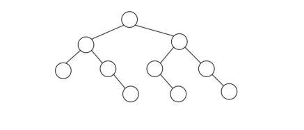
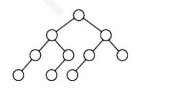
教材第 39 页 第 6 题
折半查找有序表(4,6,10,12,20,30,50,70,88,100)。若查找表中元素58，则它将依次与表中（ ）比较大小，查找结果是失败。
A． 20、70、30、50 B． 30、88、50，70 C． 20、50 D． 30、88、50 答案与解析 答案：A
一共10 个元素，在选取mid 元素时，可以取第5 个（编号1~10），也可以取第6 个，一旦确定左右谁多谁少的规则，后续都要满足这种规则。A 选项中，第一次选20，即左边比右边少一个元素。58>20，应当继续查找右边区间。(30, 50, 70, 88, 100)中，mid 元素是70，58<70，所以走左边。[30, 50]，mid 元素取30，58>30，走右边。(50)最后58>50，到失败结点，查找失败。查找的元素依次是20、70、30、50，A 正确。若是B 选项，确定30 为第一个mid 元素，也就确定了划分时，左边比右边多一个的规则。 58>30，走右边区间(50, 70, 88, 100)，继续遵循左边比右边多一个的规则，mid 元素应该是88。 58<88，走左边区间(50, 70)，mid 元素应该是70，58<70，最后走(50)，所以查找依次是30、88、 70、50。
教材第 40 页 第 7 题
对511 个关键字的有序序列进行折半查找，查找失败的平均查找长度为（ ） 40974097
A． B． C． 9 D． 10511512 答案与解析 答案：C
511 = 29 −1，所以折半查找判定树是一棵高度为9 的满二叉树，所有的失败9∗512结点都在第10层，𝐴𝑆𝐿失败 =512 = 9 。 A 选项是查找成功的平均查找长度， 𝐴𝑆𝐿 成功 = 1∗1+2∗21 +3∗22 +...+9∗28 4097511 （差比数列求和） = 511
教材第 40 页 第 8 题
设查找表中有100 个元素，如果用二分法查找方法查找数据元素X，则最多需要比较（ ）次就可以断定数据元素X 是否在查找表中
A． 5 B． 6 C． 7 D． 8 答案与解析 答案：C
有n 个元素的有序顺序表，二分查找元素的次数上界为⌊𝑙𝑜𝑔2 𝑛⌋+ 1 次，代入n=100 即可得到答案为7。
教材第 40 页 第 9 题
假设在有序线性表A[1..30]上进行二分查找，则比较五次查找成功的结点数为（ ）
A． 8 B． 12 C． 15 D． 16 答案与解析 答案：C
查找一次成功的节点数为1，下标为15（假设偶数个结点分两个区间时，左边比右边少一个）查找二次成功的节点数为2，下标7，23查找三次成功的节点数为4，下标3，11，19，27查找四次成功的节点数为8，下标1，5，9，13，17，21，25，29查找五次成功的节点数为15，下标2，4，6，8，10，12，14，16，18，20，22，24，26，28，30
教材第 40 页 第 10 题
下列关于查找的说法中，正确的是（ ）
A． 若数据元素保持有序，则查找时就可以采用折半查找法 B． 折半查找与二叉查找树的时间性能在最坏情况下是相同的 C． 折半查找法的平均查找长度一定小于顺序查找法 D． 折半查找法查找一个元素大约需要O(log2n)次关键字比较 答案与解析 答案：D
二叉查找树在最坏情况下是O（n）。
教材第 40 页 第 11 题
对于具有152 个记录的文件，采用分块查找法，且每块长度为8。若索引表和各块内均用顺序查找，则平均查找长度为（）
A． 4.5 B． 9 C． 14.5 D． 13.5 答案与解析 答案：C
每块长度为8，则共有152／8=19 块，即索引表项为19，那么顺序查找索引表时的平均查找长度为（19+1）／2=10，而在一个块内的平均查找长度为（8+1）／2=4.5，因此综合上面两项为C 答案。
教材第 40 页 第 12 题
当采用分块查找时，数据的组织方式为（ ）
A． 数据分成若干块，每块内数据有序 B． 数据分成若干块，每块内数据不必有序，但块间必须有序，每块内最大（或最小）的数据组成索引块 C． 数据分成若干块.，每块内数据有序，每块内最大（或最小）的数据组成索引块 D． 数据分成若干块，每块（除最后一块外）中数据个数需要相同 答案与解析 答案：B
分块查找是将数据分为若干块，不要求索引块内数据个数相等，且块内数据不必有序，块间有序，每块内最大(或最小)的数据组成索引块，故本题选B。
教材第 40 页 第 13 题
若对961 个记录的索引顺序表进行分块查找，块数为31，索引查找采用二分查找，块内查找为顺序查找，那么查找成功的平均查找长度为（）（结果向上取整）
A． 20 B． 21 C． 25 D． 26 答案与解析 答案：B
𝐴𝑆𝐿成功= 𝐴𝑆𝐿二分查找查找成功+ 𝐴𝑆𝐿顺序查找查找成功= 1∗1+2∗21 +3∗22 +4∗23 +5∗24 31+1129 ⌈+⌉=⌈31 + 16⌉= 21 231
教材第 40 页 第 14 题
对有2500 个记录的索引顺序表（分块表）进行查找，最理想的块长为（ ）。
A． 50 B． 125 C． 500 D． 𝑙𝑜𝑔22500 答案与解析 答案：A
设块长为b，索引表包含n/b项，索引表的ASL=(n/b+1)/2，块内的ASL=(b+1)/2，𝐴𝑆𝐿总= 𝐴𝑆𝐿索引表+ 𝐴𝑆𝐿块内=𝑏+ 𝑛/𝑏+ 2/2，其中对于b+n/b，由均值不等式知b=n/b时有最小值，此时。则最理想块长为2500=50。
教材第 40 页 第 15 题
下面是关于二叉排序树的说法，正确的是（ ）
A． 已知二叉排序树的关键字的先序遍历序列，可以确定该二叉排序树 B． 同样一组记录，等概率成功查找时，二叉排序树平均查找时间一定小于顺序表平均查找时间 C． n 个结点的二叉排序树有多种，等概率成功查找时，其中树高最小的二叉排序树不一定是平均查找长度最佳的 D． 在任意一棵二叉排序树中，删除某结点后又将其插入，则所得二叉排序树与原二叉排序树相同 答案与解析 答案：A
对于A，因为二叉排序树的中序遍历序列一定是关键字的有序序列，所以可以将其先序遍历序列排序从而得到中序序列。而后由先序序列和中序序列来确定该二叉排序树。对于B，一般意义上，二叉排序树优于顺序表的平均查找时间，但是若这组记录构造出的二又排序树恰巧是单枝状时，那么在其上的平均查找时间和顺序表是一样的，都是（n+1）/2，其中n 是表中的结点数。对于C，在二叉排序树上的一个结点被成功查找时，关键字比较次数就是它所在的层数，由于是等概率查找情况，要使所有结点总的比较次数最小，则平均查找长度也必为最佳，显然二叉排序树的树高最小可以满足要求。对于D，在二叉排序树中，删除哪一个结点是可以按情况任意指定的，可以是根，可以是非叶结点，也可以是叶子结点；但是二叉排序树在插入结点时一定是发生在分支末端，即新添加一个叶子结点，所以删插结点前后的二叉排序树不能保证是一样的。另外，若给定一组记录，而给出的记录顺序不同，生成的二叉排序树也不一定相同，因为生成的过程是从空二叉排序树开始不断插入记录结点，其中的第一个记录生成根结点。
教材第 40 页 第 16 题
分别以下列序列构造二叉排序树，与用其它三个序列所构造的结果不同的是（ ）
A． (100，80，60，90，120，130，110) B． (100，120，110，130，80，60，90) C． (100，80，90，60，120，110，130) D． (100，60，80，90，120，110，130） 答案与解析 答案：D
其余三个选项为
教材第 41 页 第 17 题
若想查找63，哪个最有可能是在二叉排序树上进行的查找（ ）
A． 2251013980705963 B． 391012580705963 C． 1017023925598063 D． 5928070392563 答案与解析 答案：A
只需依次判断后序结点是否全比当前结点大或者小，显然只有A 符合。
教材第 41 页 第 18 题
已知10 个元素（54，28，16，34，73，62，95，60，26，43），按照依次插入的方法生成一棵二叉排序树，查找值为62 的结点所需比较次数为（ ）
A． 2 B． 3 C． 4 D． 5 答案与解析 答案：B
依次插入将带插入值直接放入二叉搜索树符合条件位置，使得整棵树左子树均比根小，右子树均比根大，查找62 需要比较3 次，分别是和52、73、62 比较。
教材第 41 页 第 19 题
高度为8 的平衡二叉树的结点数至少为（ ）
A． 15 B． 54 C． 87 D． 255 答案与解析 答案：B
不妨假设非空的高度为h 的平衡二叉树的结点数至少为f（h）。它是由1个根结点及其左右子树构成的，那么左右子树可以分别是树高为h-1 和h-2 的具有最少结点数的平衡二叉树。由递推公式F(n)=F(n-1) + F(n-2) + 1;F(1) = 1, F(2) = 2，可递推1, 2, 4, 7, 12, 20, 33, 54。
教材第 41 页 第 20 题
含有18 个结点的平衡二叉树的最大深度为（ ）。
A． 4 B． 5 C． 6 D． 7 答案与解析 答案：B
设𝑁ℎ 表示高度为h 的平衡二叉树中含有的最少结点数。由递推式𝑁ℎ = 𝑁ℎ−1 + 𝑁ℎ−2 + 1 可推：𝑁0 = 0, 𝑁1 = 1, 𝑁2 = 2, …, 𝑁3 = 4, 𝑁4 = 7, 𝑁5 = 12, 𝑁6 = 20 > 18所以18 个结点的最大高度为5，答案选B。
教材第 41 页 第 21 题
在含有15 个结点的平衡二叉树上，查找关键字为28 的叶子结点（存在该结点），则依次比较的关键字有可能是（）
A． 30, 28 B． 38, 48, 28 C． 48, 18, 38, 28 D． 60, 20, 50, 40, 38, 28 答案与解析 答案：C
设𝑁ℎ 表示高度为h 的平衡二叉树中含有的最少结点数。由递推式𝑁ℎ = 𝑁ℎ−1 + 𝑁ℎ−2 + 1 可推：𝑁0= 0, 𝑁1= 1, 𝑁2= 2, …, 𝑁3= 4, 𝑁4= 7, 𝑁5= 12, 𝑁6= 20 > 15。（推导：套娃！）也就是说，高度为6 的平衡二叉树最少有20个结点，因此15个结点的平衡二叉树的高度最大为5，即叶子结点的最大高度为5。最小叶子结点的层高为3，因为高度为5 的平衡二叉树，根据上述递归式𝑁ℎ= 𝑁ℎ−1 + 𝑁ℎ−2 + 1，根结点一侧树高为4 的结点数最少平衡二叉树，一侧为树高为3 的结点数最少平衡二叉树，高度为3 的结点数最少平衡二叉树中，叶子结点最低为2，所以在原来h=5 的平衡二叉树中，叶子节点最低在第3 层。所以叶子结点所在层高h∈[3，5]，A、D 选项查找高度为2，6，故错误。B选项的查找过程不能构成二叉排序树，故错误。正确答案选C。
教材第 41 页 第 22 题
在平衡二叉树中插入一个节点后造成了不平衡，设最低的不平衡节点为A，并已知A 的左孩子的平衡因子为0，右孩子的平衡因子为1，则应作（ ）型调整以使其平衡。
A． LL B． LR C． RL D． RR 答案与解析 答案：C
插入结点导致不平衡，一定是某棵子树高度增加，导致比另外一边的子树高度相差2，导致出现不平衡结点（平衡因子绝对值>1，即2 或-2）。接下来应该判断是2 还是-2，经过以上分析，插入之后势必所在子树的平衡因子要么是1，要么是-1（如果插入后平衡因子还是0，高度一定不会增加）。满足条件的是右孩子，所以插入元素的位置一定是右孩子的左子树。所以应该进行RL 调整。
教材第 41 页 第 23 题
一棵结点数为12 的平衡二叉树，其最大高度为（）（根节点高度为1）；叶子结点最多为 （）个。
A． 4, 5 B． 5, 5 C． 5, 6 D． 4, 6 答案与解析 答案：C
每个分支结点平衡因子为1（或全为-1）时，高度最大，此时h 层所需最少结点数应按递推式H(n) = H(n - 1) + H(n - 2) + 1 计算，各层的最少结点数分别为1, 2, 4, 7 , 12, 20…，所以在这种情况下，12 个结点刚好在第5 层，即AVL 的最大高度为5。树中，由度数+1=结点总数可以推出，2𝑛2 + 𝑛1 + 1 =𝑛2 + 𝑛1 + 𝑛0 ，即𝑛2 + 1 = 𝑛0 →2𝑛0 −1 + 𝑛1 = 12，完全二叉树满足度为1 的结点数最少，此时度为1 的结点数为1，得叶子结点数为6，选C。
教材第 41 页 第 24 题
高度为3 的平衡二叉排序树的形态共有（ ）种。
A． 13 B． 14 C． 16 D． 15 答案与解析 答案：D
按高度依次来分析不同平衡二叉树的情况： h=1，只有一个根节点，所以只有1 种情况。 h=2，一共3 种情况，①根节点+左孩子②根节点+右孩子③根节点+左右孩子h=3，根节点的左右子树高度之差不超过1，有三种情况：①左子树h=2，右子树h=1，此时左子树h=2的平衡二叉树有3 种，h=1 只有一种，所以是3*1=3；②左子树h=1，右子树h=2，同样也是1*3=3 种；③左子树h=2，右子树h=2，一共是3*3=9 种；综合以上分析，h=3 的平衡二叉树的形态有3+3+9=15 种。
教材第 41 页 第 25 题
5 个结点的平衡二叉树有多少种不同的形态（ ）
A． 5 B． 6 C． 7 D． 8 答案与解析 答案：B
首先根据高度为h的平衡二叉树最少结点数公式： 𝑁ℎ = 𝑁ℎ−1 + 𝑁ℎ−2 + 1，可以得到𝑁1 = 1, 𝑁2 = 2, 𝑁3 = 4, 𝑁4 = 7；所以5 个结点的平衡二叉树高度最大为3。而高度为2 的满二叉树最多可容纳3 个结点，所以5 个结点的平衡二叉树高度一定是3，且第二层是排满的2 个结点，否则不平衡，第三层也就剩下5-3=2 个结点。即从第三层的4 个结点任意选出22 = 6 种。在考场，第一时间也可以枚举，枚举的过程应该顺着上面个，都满足平衡二叉树，答案为𝐶4 的思路来确定情况。
教材第 41 页 第 26 题
若将关键字1,2,3,4,5,6,7 依次插入初始为空的平衡二叉树T，则T 中平衡因子为0 的分支结点的个数是（）
A． 0 B． 1 C． 2 D． 3 答案与解析 答案：D
插入过程如下图所示，平衡因子为0 的分支结点个数为3 个。
教材第 41 页 第 27 题
下图有可能是一棵刚做过BST 的（）操作，但尚未旋转调整的AVL 树。 I．delete(2) II．insert(3) III．delete(4) IV．insert(5) V．insert(8)
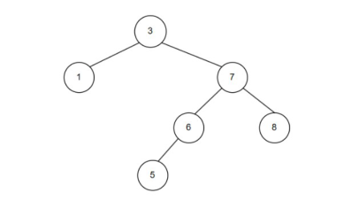
A． II、III、V B． I、IV C． II、IV D． I、III、IV 答案与解析 答案：D
看看进行操作前是否符合AVL。 I、IV 正确，显然删除2 和插入5 之前是符合AVL 树的。 II 错误，BST 的insert 操作一定是在叶子结点，不可能插入到根结点。 III 正确，删除4 的原树如右图所示，BST 删除后用前驱3 作为新的根节点。 V 错误，插入8 之前不符合AVL。
教材第 41 页 第 28 题
下列关于二叉排序树和平衡二叉树说法，正确的是（ ）
A． 对一棵二叉排序树，删除其中某个结点，再插入关键字与其相同的结点，二叉排序树不变 B． 对一棵二叉排序树，插入某个结点，再删除这个插入的结点，二叉排序树不变 C． 对一棵平衡二叉树，删除其中某个结点，再插入关键字与其相同的结点，平衡二叉树不变 D． 对一棵平衡二叉树，插入某个结点，再删除这个插入的结点，平衡二叉树不变 答案与解析 答案：B
A 选项，若删除的是分支结点，则再插入后，二叉树一定改变。例子如下图：删除5再插入5，发生改变B 选项正确，插入的结点一定在叶子结点，再删除恢复到原状。 C、D 选项错误，调整后可能会导致变化，也可能不变； C 选项不变化的图例：（同样，在第二步只有1，3 结点的情况中，插入2，再删除2，D 选项可能无变化） C 选项变化的图例：删除20，再插入20，发生改变。 D 选项发生变化的图例：
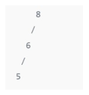
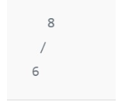
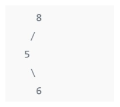
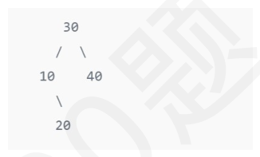
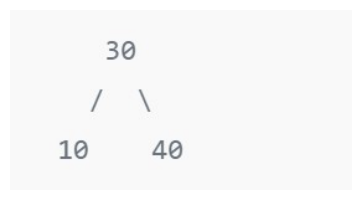
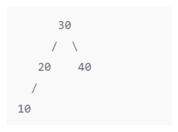
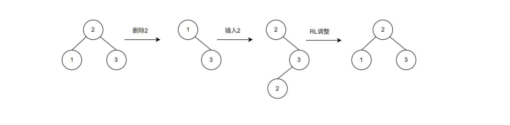
教材第 42 页 第 29 题
下列关于红黑树的说法正确的是（ ） I．红黑树的某棵子树（如果有的话），也一定是红黑树。 II．如果根结点黑高为h，则内部结点数（含关键字的结点）最多有22ℎ −1个III．红结点数量不会超过内部结点数量的一半IV．任何一个结点的左右子树高度之差不超过2 倍V．红黑树和平衡二叉树的查找、插入、删除操作，最坏时间复杂度数量级相同。
A． II、III、IV、V B． I、IV、V C． II、IV、V D． III、IV、V 答案与解析 答案：C
I 错误，子树结点若是红色，则不符合红黑树根结点为黑色的要求。 II 正确，最多的情况是黑色和红色交替出现的满二叉树。 III 错误，比如三个结点，根为黑色，两个孩子为红色的树就是反例。 IV 正确，任何一个结点的黑高确定，则两种极端是都是黑色和黑红交替，长的一侧不会超过短的一侧的两倍。 V 正确，对比如下图所示。
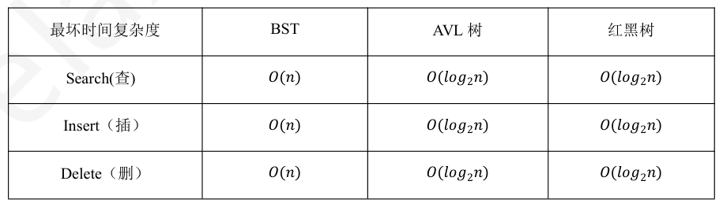
教材第 42 页 第 30 题
下列关于红黑树和AVL 树的说法中，不正确的是（ ）。 I．一棵含有n 个结点的红黑树的高度至多为2𝑙𝑜𝑔2 𝑛+ 1II．若一个结点是红色的，则它的父结点和孩子结点都是黑色的III．红黑树的查询效率一般要优于含有相同结点数的AVL 树IV．若AVL 树的某结点的左右孩子的平衡因子都是零，则该结点的平衡因子也是零
A． I、III B． III C． II、IV D． III、IV 答案与解析 答案：D
I 和Ⅱ都是红黑树的性质。AVL是高度平衡的二叉查找树，红黑树是适度平衡的二叉查找树，从这一点也可以看出AVL的查询效率往往更优，III 错误。AVL 的某结点的左右孩子的平衡因子都是0，并不能说明左右子树的高度相等，因此该结点的平衡因子不一定为零，IV错误。
教材第 42 页